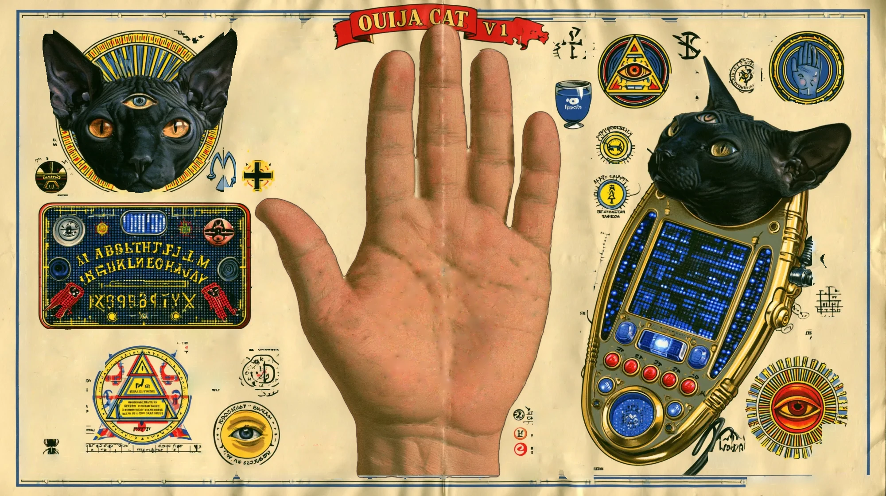

← Templum
Parlour
Turntable
Crystal
The Palm
Whole board
Transcript
Full screen
Turn your phone sideways. He doesn’t fit upright.
OK

DROP YOUR PALM
Lines measured from your photo on this machine; nothing is uploaded. Meanings from the old palmistry books.